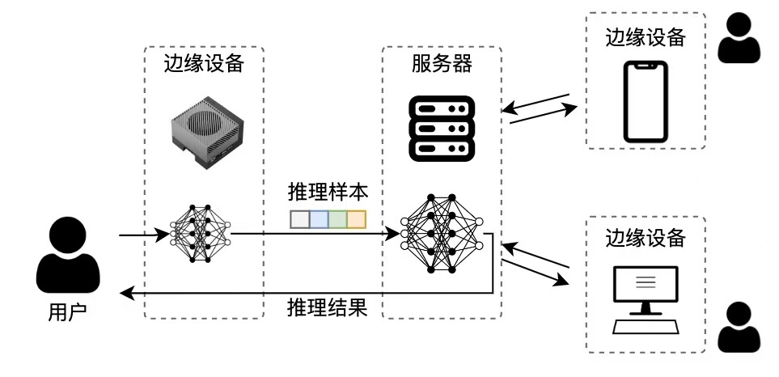

SplitInfer
GitHub
|
Abstract
The rapid advancement of large foundation models has opened new avenues for applications in various domains.
However, deploying these models on resource-constrained edge devices poses significant challenges, particularly regarding data privacy and computational efficiency.
To address this issue, the SplitInfer framework has been developed, enabling split inference of large models while maintaining the integrity of sensitive data.
SplitInfer leverages the power of cloud computing to facilitate inference without the need to transmit personal data to high-performance servers.
This innovative approach not only enhances the security of user information but also optimizes resource utilization by distributing computation tasks between edge devices and cloud infrastructure.
Supporting a range of popular foundation models, including GPT-2, Llama3, Qwen2-VL, and DeepSeek-R1,
SplitInfer provides a versatile and efficient solution tailored for edge computing environments.
As an emerging framework in the realm of model inference, SplitInfer lays the groundwork for further research and development aimed at advancing privacy-preserving AI applications.
TLDR takeaways

SplitInfer contains the following directories:
- infer_modelsplit.py: A simple demo for split model inference, illustrating how to perform the inference process.
- modelsplit.py: The definition file for the split model, modified to align with the model definition format in the transformers library.
- utils.py: Contains utility functions for loading model parameters and printing model parameter counts, aiding users in model management and debugging.
Supported Models
SplitInfer currently supports the following models:
-
GPT-2: A widely used language model for text generation tasks.
-
Llama3: A high-performance language model optimized for various NLP tasks.
-
Qwen2-VL: A vision-language model capable of handling both text and image inputs.
-
DeepSeek-R1: A state-of-the-art model designed for complex reasoning and generation tasks.
Key observations
SplitInfer compare with several types of foundation models:
Performance Evaluation
For more detailed experimental results, please refer to our paper.
Future Direction about SplitInfer
We aim to enhance SplitInfer by focusing on several key areas:
-
Model Expansion: We plan to broaden the range of supported foundation models, allowing users to leverage a wider variety of advanced models tailored for different applications.
-
Task Versatility: Our goal is to incorporate support for additional tasks, enhancing the framework's adaptability in various edge computing scenarios.
-
Performance Optimization: We will investigate and implement strategies to optimize inference speed and resource usage, ensuring efficient operation on resource-constrained devices.
-
User-Friendly Interfaces: We intend to develop more intuitive interfaces and documentation to improve user experience and facilitate easier implementation of SplitInfer in diverse environments.
-
Community Engagement: Encouraging community contributions and feedback will be a priority, as we seek to refine and enhance SplitInfer based on user needs and experiences.